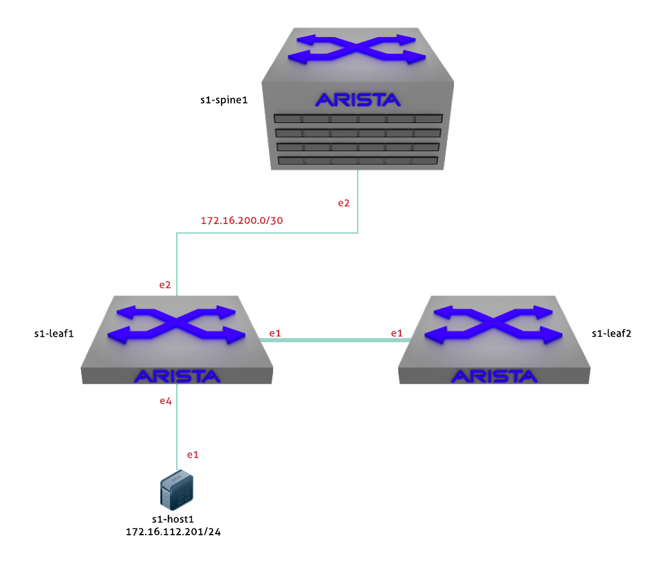

Troubleshooting Introduction

:::: note ::: title Note :::
A set of possible answers are available here. This hyperlink is only available to Arista employees. Please work with your Arista SE for access. ::::
- Log into the LabAccess jumpserver:
- Type
labsor option97at the Main Menu prompt. This will bring up additional lab menu selections. - Type
troubleshooting-labsor option4at this prompt to open the troubleshooting lab section (If you were previously in the Troubleshooting Labs Menu, you can typebackor option97to go back). - Type
tshoot-introor option1at the prompt. The script will configure the lab into a errored set of states. It is up to you to determine a solution for each of the questions below. There can be many solutions, please work with your SE.
- Type
- Questions
- Why can't s1-Leaf1 ping s1-Host1? Are there multiple ways to fix this?
- Why is s1-Leaf2 the spanning tree root for all VLANs?
- Why isn't 172.16.112.0/24 being advertised into BGP?
- Why won't the OSPF adjacency come up between Leaf1 & Spine1?